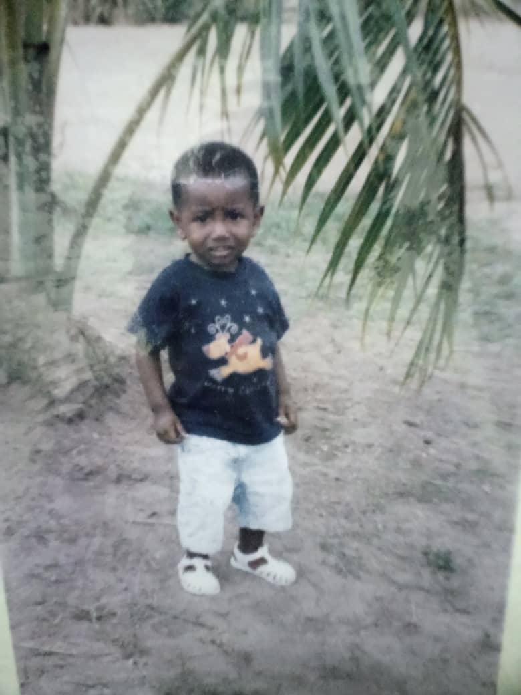
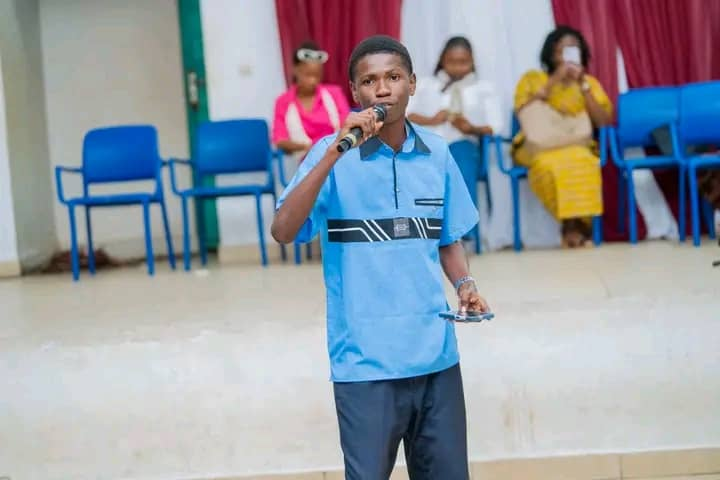

✦ Le commencement ✦
Il était une fois un petit garçon qui s'appelait Del.
Il vivait une vie banale, sans savoir que quelqu'un, quelque part, grandissait aussi.
✦ Un lieu précieux ✦
Derrière cette porte, il n'y a rien à chercher — c'est toi qui es invitée.
✦ Le jardin ✦
Autour de toi, les souvenirs vont éclore un à un.
Descends doucement ↓

✦ Le commencement ✦
Il était une fois un petit garçon qui s'appelait Del.
Il vivait une vie banale, sans savoir que quelqu'un, quelque part, grandissait aussi.

✦ Le garçon ✦
Un garçon qui aimait rire, danser, s'amuser — et qui avait découvert l'amour du gospel, ce souffle qui porte les voix plus haut.
Mais ce soir-là, il découvrait un autre type d'amour.
✦ Le musée ✦
Voyons voir comment Del perçoit cette soi-disant Esther…
Son visage est plus magnifique que la Joconde.
Le Louvre a ses chefs-d'œuvre. Moi, j'ai son sourire.
La tour Eiffel brille la nuit. Elle, elle brille tout le temps.
Michel-Ange a sculpté le David. Dieu a pris son temps pour elle.
Aucun musée au monde n'est assez grand pour elle.
Choisis une œuvre pour la regarder de plus près.
✦ Le dernier tableau ✦
— Del